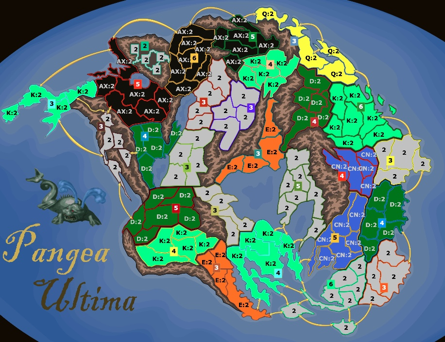
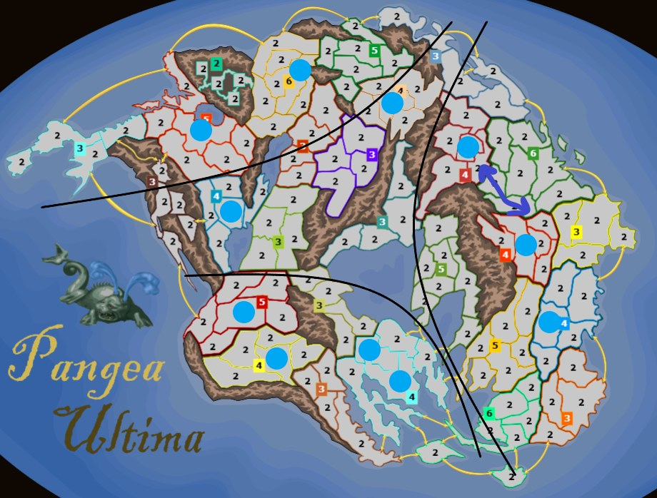

Pangea Ultima
Pangea Ultima is a very unique Weighted Random template. You have 6 income, more than usual, which means faster expansion, and only 2 armies per initial territory, which sort of forces your hand into specific ideas.
Settings
- Weighted Random distribution.
- 6 base income.
- 2 armies per initial territory.
- 3 starting territories.
- Cyclic move order.
Map Overview / Dynamics

The data can be perceived in whatever way anyone wishes; it's just the win rate of picked bonuses across 447 games in total.

There is no real center on this map. Instead there are three income regions, north, south and east, each with its own advantages and disadvantages.
Picking
The main ideas revolve around income transitions:
- Two +3s: 6 → 6 → 12
- A +4: 6 → 6 → 10 → 14 or 15
- A +5: 6 → 6 → 11 → …
Ideas 2 and 3 can be seen in this game. Octane picks a +5 bonus where the starting spawn already has vision of the entire bonus, which allows seamless expansion on Turn 4 to go 6 → 11 → 14 → 19. Forsaken similarly picks a +4 bonus in the east with the same idea. The light blue circles in the second image mark the bonuses and territories that fit this category. With 6 income, you can accelerate your income really fast.
For idea 1, you pick two +3 bonuses and try to complete both by the end of Turn 2. You have roughly a 2/3 chance to succeed (67.712%). It works here and fails here.
So what are you supposed to pick? My personal take is that this template is very rock-paper-scissors on picks. Because of that, I try to implement drastically different ideas each game, and I scout my opponents. In the latest AWP tournament on Pangea Ultima to date (link), my method was scouting my opponent and using wunderwaffle. It got me to the final somehow.
The main takeaway: don't pick the same thing again and again. Pick unconventionally on purpose so you're unexpected to your opponent, while keeping the tempo of armies in your head.
It's generally good practice to cover all three regions, regardless of wastelands. The +6 bonus in the north can even work as a solo pick, like here.
Gameplay
To be written.